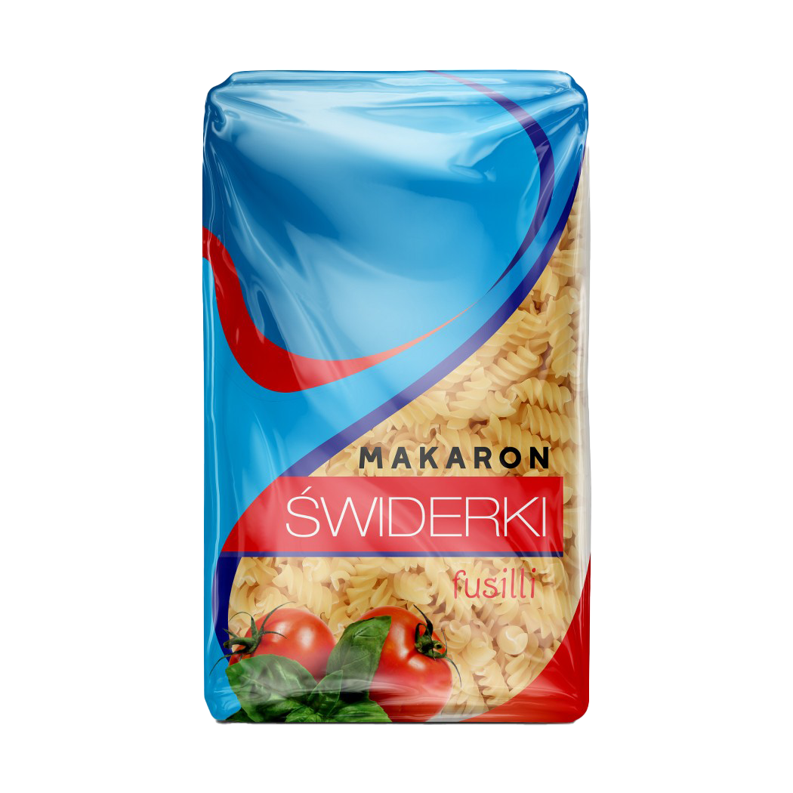

Świderki
Sposób przygotowania
Zagotuj wodę, 1 l na 100 g makaronu. Posól według uznania. Do gotującej się wody wrzuć porcję Makaronu Lubella. Gotuj 5-6 minut. Od czasu do czasu zamieszaj. Ugotowany makaron odcedź.
O produkcie
Lubella Mini kółka to makaron, który chce się jeść na okrągło! Dobrze komponuje się z zupami, ale również w sałatkach i zapiekankach. Najmłodszym smakoszom z pewnością do gustu przypadnie nietypowy kształt makaronu, który pobudzi ich wyobraźnię i zamieni każdy posiłek w świetną zabawę.
